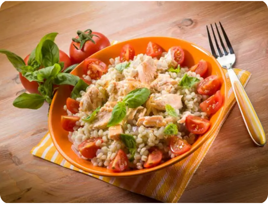
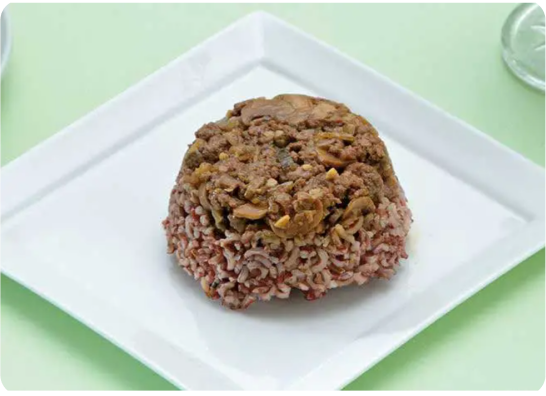

BABY'S FOOD
Home
About Us
MPASI
INFORMASI MPASI
RESEP NASI TIM MPASI
RESEP BUBUR MPASI
RESEP PURE MPASI
RESEP FINGER FOOD MPASI
Discuss
Contact
TIM MPASI NASI
Selain untuk makan nasi juga bisa dipakai untuk lem
Nasi Tim Ayam Tomat
Bahan
Beras (4 sendok makan)
Air (400 mL)
Daging ayam cincang (2 sendok makan)
Tomat (1 buah)
Bawang putih (½ siung)
Irisan daun bawang (1 sendok teh)
Cara Pengolahan
Cuci bersih beras. Potong dadu kecil buah tomat dan buang bijinya. Cincang bawang putih.
Masak beras dan air hingga beras lunak. Tambahkan daging ayam cincang, tomat,bawang putih, dan irisan daun bawang.
Masak hingga semua bahan matang. Angkat.
Tuang nasi ke dalam panci tim. Masak dengan cara ditim selama 30 menit hingga tekstur beras benar-benar lunak.
Angkat dan sajikan


Nasi Tim Daging Beras Merah
Bahan
Beras (4 sendok makan)
Air (400 mL)
Daging sapi cincang (25g)
Brokoli(40)
Bawang putih (½ siung)
Irisan daun bawang (1 sendok teh)
Cara Pengolahan
Cuci bersih beras. Cuci bersih brokoli kemudian potong-potong kecil. Cincang bawang putih.
Masak beras merah dan air hingga beras lunak.
Tambahkan daging sapi cincang, brokoli, daun bawang, dan bawang putih.
Masak hingga semua bahan matang dan air terserap.
Angkat.Masukkan nasi ke dalam panci tim.
Masak selama 30 menit atau hingga tekstur beras benar-benar lunak.
Angkat dan hidangkan.
Nasi Tim Daging Tahu Ayam
Bahan
Beras (4 sendok makan)
Air (400 mL)
Tahu putih(25g)
Daun bayam(10)
Bawang putih (½ siung)
Irisan daun bawang (1 sendok teh)
Cara Pengolahan
Cuci bersih beras
Haluskan tahu.
Cuci bersih daun bayam kemudian iris halus.
Cincang bawang putih.
Masak beras dengan air hingga beras lunak.
Masukkan tahu, daun bayam, bawang putih, dan irisan dun bawang
Masak hingga air terserap habis.
Angkat.